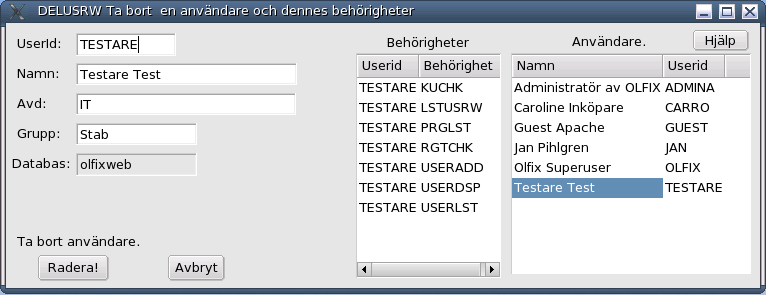

Order/Lager/Fakturering för Linuxsystem
Användarmanual
Kapitel Administration
Version 0.1
2006-01-10
This program is free software; you can
redistribute it and/or modify
it under the terms of the GNU
General Public License as published by
the Free Software
Foundation; either version 2 of the License, or
(at your option)
any later version.
Copyright 2004 Jan Pihlgren.
Administration. Allmännt.
Användaradministration. Ny användare. Lista användare. Ta bort användare.
Funktionsadministration. Ny funktion.
Behörighetsadministration. Ny behörighet.
Att använda ett ekonomisystem lär man sig inte på en dag. Det är många saker man måste ha kännedom om.
Bland annat behöver man lära sig metoder för backup och "köra" uppdaterings och rensningsprogram regelbundet.
OLFIX har ett eget behörighetssystem ovanpå operativsystemet (Linux). Behörighetssystemet kan hanteras av personer som inte är speciellt utbildade på operativsystemet. En användare med kunskaper om företagets affärsfilosofi och regler för spridning av företagets information kan enkelt handera OLFIXs behörighetssystem.
Behörighetssytemet bygger på att varje användare av OLFIX finns registrerad med sitt ordinarie loggin-ID (operativsystemets loggin-ID) samt en förteckning över vilka programmoduler vederbörande har rätt (behörighet) att använda.
För att kunna använda OLFIX krävs att en användare finns registrerad i respektive databas.
Användaren måste dessutom finnas upplagd som användare i operativsystemet.
Lägga upp den nya användaren med ADDUSRW.
Administration - Användaradministration - Ny användare.

Användar_ID: Ange användarens inloggnings-ID. OBS! Maximalt 8 tecken.
De övriga tre fälten är bara information.
Namn: Fyll i användarens verkliga namn.
Avd: Ange var i organisationen användaren arbetar, t ex Ekonomi, Produktion
Grupp: Ange vilken över- eller undergrupp användaren tillhör.
OBS! Programmet ändrar automatiskt till versaler vilket är OK.
Använd LSTUSRW för att se vilka användare som finns registrerade.
Användare OLFIX är väsentlig för möjligheten att kunna lägga upp behörigheter i systemet. I övrigt bör åtminstone en egen användare finnas registrerad.
För att ta bort en användare, med samtliga dennes rättigheter ur systemet använd DELUSRW.

Userid: Ange användarens inloggnings-ID. Avsluta med att trycka på Enter.
Behörighetssystemet är till för att selektera behörighet till olika delar av OLFIX.
Det medger att någon annan än den som administrerar datorsystemet att organisera och tilldela behörigheter till OLFIX:s databaser. Behörigheterna gäller respektive databas.
Behörighet i t ex olfix medger inte per automatik behörighet i olfixtst och vise versa.
Databasen olfixtst levereras med fullständiga rättigheter för den som installerat OLFIX.
När det gäller databasen olfix (den skarpa databasen) så får du själv lägga upp de rättigheter du behöver, en och en.
För att kunna använda ett program eller en funktion behövs en koppling mellan användaren och programmet.
I den Tekniska Manualen anges till vilka funktioner behörighet erfordras för respektive program.
Tilldelning av behörighet görs med programmet ADDRGTW.
Skriv in Användar-ID och tryck på Enter. Användar-ID ska var det samma som det user-ID som används vid inloggning till Linux. Max 8 tecken. Bokföringsår:
Tvåställig bokstavskombination som anger vilket
bokföringsår som avses.
Administration - Användaradministration - Lista användare.

Knappen Uppdatera är till för att läsa in data igen.
Administration - Användaradministration - Ta bort användare.
Allternativt kan man klicka på önskad Userid i tabellen till höger. Glöm inte att trycka på Enter efteråt.
Klicka på knappen Hämta för att hämta information om användaren.
Nu kan man radera användaren samt alla rättigheter för denne genom att klicka på knappen OK.
I fall man ångrar sig kan man klicka på knappen Sluta och programmet avbryts utan att någonradering sker.
Även när man är klar med att ta bort användare klickar man på knappen Sluta.
Varning! Användaren OLFIX får absolut inte tagas bort! Vare sig som användare eller behörigheterna.
Administration - Behörighetsadministration - Ny behörighet.

Fyll sedan i önskad behörighet och tryck på Enter.
Allternativt kan man klicka på önskad funktion i tabellen till höger. Glöm inte att trycka på Enter.
Klicka sedan på OK-knappen för att registrera.
Upprepa förfarandet för varje önskad behörighet.
Detta måste även göras för de program användaren ska ha behörighet att använda.
Lämna ADDRGTW genom att klicka på knappen Avsluta.